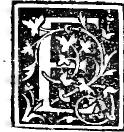

CHAPTER XLVIII¶
On the Form and Disposition of the Plane (Solid) and Hollow (Skeletal) Tetracedron, Regular and Truncated (Plates I–IV), and Elevated (Plates V–VI).

Having demonstrated the theoretical generation, proportions, and mutual inscriptions of all five regular bodies, we now present to Your Ducal Highness’s eyes their true perspective images—drawn by the hand of our Leonardo da Vinci—together with their truncated (abscisi or tagliati) and elevated (elevati or pontuti) dependent bodies, beginning with the first regular body, the tetracedron (Plates I–VI).
1. The Regular Tetracedron — Solid (Plate I) and Hollow/Skeletal (Plate II)
Plate I (Folio 0187, Tetracedron Planum Solidu[m]) and Plate II (Folio 0189, Tetracedron Planum Vacuum): This first figure is the regular tetracedron itself, whose formation in the sphere we proved in Chapter XXVI ([XIII.13]). It has 4 equilateral triangular bases (faces), 4 solid angles (each contained by 3 plane angles of \(\frac{2}{3}R\)), and 6 equal edges.
Under number I it is shown solid (piano solido), so that only the front faces turned toward the eye are seen, while the back faces are hidden by its corporeal mass.
Under number II it is shown hollow or skeletal (piano vacuo), framed by solid ribs (pilastrelli) along its six edges with open windows in the middle of its faces, so that the eye sees simultaneously both the front and the back edges and vertices in true perspective.
2. The Truncated Tetracedron (Tetracedron Abscisum) — Solid (Plate III) and Hollow (Plate IV)
Plate III (Folio 0191, Tetracedron Abscisum Solidu[m]) and Plate IV (Folio 0193, Tetracedron Abscisum Vacuum): This second body is derived (dependente) from the regular tetracedron by truncation (abscissione or taglio):
If each of the 6 edges of the regular tetracedron is divided into three equal parts (\(\frac{1}{3}, \frac{1}{3}, \frac{1}{3}\)), and the 4 solid angles (corners) are sliced off by four plane cuts passing through those trisection points, then:
In place of the 4 cut-off vertices there appear 4 new equilateral triangles (whose sides equal \(\frac{1}{3}\) of the original edge of the tetracedron).
Each of the 4 original triangular faces of the tetracedron loses its three corners and is transformed into an equilateral and equiangular hexagon (of side \(\frac{1}{3}\) of the original edge)!
Thus the tetracedron absciso has 8 plane bases in all (4 equilateral triangles and 4 regular hexagons), 12 solid angles (each formed by two hexagons and one triangle), and 18 equal edges (6 remaining middle thirds of the original edges plus 12 new edges formed by the 4 triangular cuts).
Note well: here the cut was made at one-third (\(\frac{1}{3}\)) of each edge. If instead the cut is carried all the way to the midpoint (\(\frac{1}{2}\)) of each edge, the hexagons vanish into triangles and the body becomes the regular octocedron of 8 triangular bases, exactly as we proved in Chapter XXXV!
3. The Elevated Tetracedron (Tetracedron Elevatum) — Solid (Plate V) and Hollow (Plate VI)
Plate V (Folio 0195, Tetracedron Elevatum Solidu[m]) and Plate VI (Folio 0197, Tetracedron Elevatum Vacuum): This third body is derived from the regular tetracedron by elevation (elevatione):
Upon each of the 4 equilateral triangular bases of the interior regular tetracedron, erect outward an equilateral triangular pyramid (a small tetracedron) whose base is that face of the tetracedron and whose three rising lateral faces are equilateral triangles.
The resulting star-like body is bounded externally by \(4 \times 3 =\) 12 equilateral triangular faces (while the 4 bases of the inner tetracedron remain hidden inside, except in the hollow skeletal view of Plate VI where the interior frame is visible!).
It has 8 vertices in all: 4 interior re-entrant vertices (angoli de dentro, the 4 vertices of the core tetracedron) and 4 exterior projecting vertices or cones (coni / ponti de fore, the 4 apices of the elevated pyramids), and 18 equal edges (the 6 edges of the core tetracedron plus \(4 \times 3 = 12\) rising edges, called corausti).